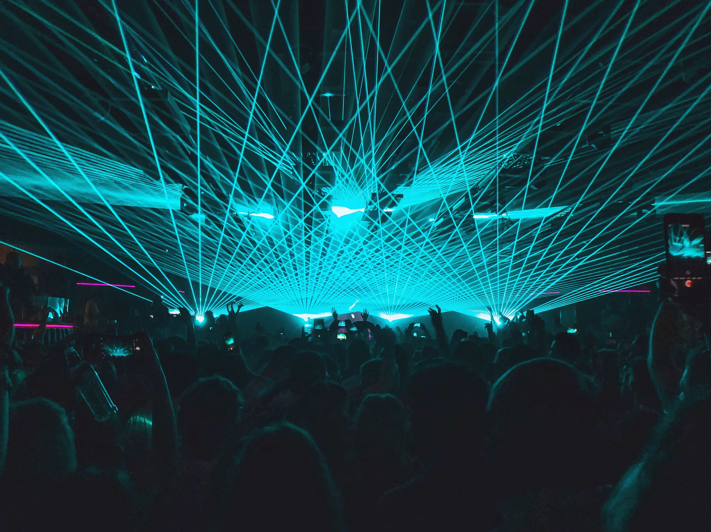

Where the Party never ends...
Ibiza is considered to be a popular tourist destination, especially due to its well-known and at times riotous nightclub-based nightlife centred on two areas: Ibiza Town, the island's capital on the southern shore and Sant Antoni to the West.
Night life in Ibiza has undergone several changes since the island's opening to international tourism in the late 1950s. Origins of today's club culture may be traced back to the hippie gatherings held during the 1960s and 1970s. During these, people of various nationalities sharing the hippie ethos would regroup, talk, play music and occasionally take drugs. These would most often happen on beaches during the day, with nude bathing a common sight, and in rented fincas in the evenings or at nights. Apart from this confidential scene, which nevertheless attracted many foreigners to the island, local venues during the 1960s consisted mostly of bars, which would be the meeting points for Ibicencos, ex-pats, seafarers and tourists alike. The Estrella bar on the port and La Tierra in the old city of Eivissa were favourites.
During the 1970s, a decade that saw the emergence of the contemporary nightclub, several places opened and made a lasting impact on Ibiza's nightlife. Four of these original clubs are still in operation today: Pacha, Privilege (formerly Ku), Amnesia and Es Paradís. These four clubs mainly defined nightlife on the White Island, which has evolved and developed from several distinctive elements: open-air parties (Es Paradis, Privilege, Amnesia), held in isolated places, eventually old fincas (Pacha, Amnesia), that mixed in nudity and costume party (Es Paradis, Privilege, Pacha) and enabled people from various backgrounds to blend (all). The hippie ethos served as a common factor that infused all these venues and catalyzed the experience of a certain kind of freedom, accentuated by the holiday nature of most of the stays on the White Island.

During the 1980s, the music played in these clubs gained in reputation and became known as Balearic beat, a precursor of the British acid house scene. As rave parties blossomed all over Europe, a DJ-driven club culture took hold of Ibizenca nightlife. It was at that time that Space opened, thanks to Pepe Rosello, which found a niche in the after-hour parties. The club would close at 6 AM and open again at 7 AM, when all the other clubs were still closed, enabling party-goers to flock from the other clubs to Space and continue dancing in broad daylight.
At the end of the 1990s, the after-hour parties took firm root on the island. In 1999, the Circoloco parties made their debut at DC10, with some of the original elements of Ibiza nightlife at the forefront.
In recent years, during the summer, top producers and DJs in dance music come to the island and play at the various clubs, in between touring to other international destinations. Some of the most famous DJs run their own weekly nights around the island. Many of these DJs use Ibiza as an outlet for presenting new songs within the house, trance and techno genres of electronic dance music. The island has achieved fame as a cultural centre for house and trance in particular, with its name often being used as a partial metonym for the particular flavour of electronic music originating there, much like Goa in India.
Since 2005, the live music event Ibiza Rocks has changed perceptions of the Ibiza party landscape.[citation needed] Bands such as Arctic Monkeys, Kasabian, The Prodigy, and the Kaiser Chiefs have played in the courtyard of the Ibiza Rocks Hotel.
The season traditionally begins at the start of June with Space and DC10's opening parties and finishes on the first weekend of October with the closing parties. A typical schedule for clubbers going to Ibiza includes waking at noon, early evening naps, late night clubbing, and "disco sunrises." Due to Ibiza's notable tolerance toward misbehavior from young adult tourists, it has acquired the sobriquet "Gomorrah of the Med." Also well-known is Café del Mar, a long-standing bar where many tourists traditionally view the sunset made famous by José Padilla, who has released more than a dozen eponymous album compilations of ambient music played at the location. That and other bars nearby have become an increasingly popular venue for club pre-parties after sunset, hosting popular DJ performers, such as Patrick Topping, Carl Cox, Green Velvet, Jozeff and many more international artists.
The island's government is trying to encourage a more cultured and quieter tourism scene, passing rules including the closing of all nightclubs by 6 a.m. at the latest and requiring all new hotels to be 5-star.[31] The administration wants to attract a more international mixture of tourists.